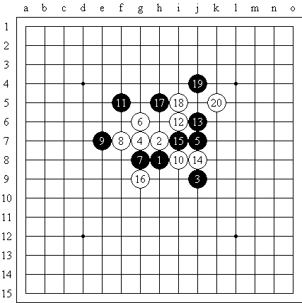
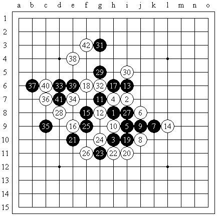

2008.7,19,20日江苏五子棋联赛(江阴站)
#1 2008.7,19,20日江苏五子棋联赛(江阴站) 作者：小丸.net 发表时间：2008-7-26 23:37:00
友谊赛

那天早上，天有些阴，出门也没有带伞，不管它，打了张票就去了江阴，到了东门后，沿着丸子指点的位置转车来到中医院下车。沿途问了无数个江阴本地人都不清楚致和大厦的位置，山穷水尽的时候，终于在华联对面看到的致和大厦的名字，比赛还没有开始。由于在路上磨了小半天，我饭都没有吃呢。饿就饿着吧，比赛要紧，第一轮是，南京的王烨林mm，有鉴于上次去南通，南通mm和上海mm都被我轻易的干掉了。这次就放点水吧。所以我讲好是除花浦之外不换，mm相信了吗？新月开局，黑大优。我记忆中貌似除了上图的4，其他都是黑必胜。那么就这个4
吧。如果按谱走棋，黑棋中局进攻方向不明。一路走到10，11盖简明（更强），但不是谱着，谱着走，11=28，事后和mm复盘，结论是mm不知道谱着，晕倒。12很弱，但我在家里拆的结果是，黑棋有唯一防。见下图。如果17直接在右边做棋也有唯一防。实战13，和15都很稳健。16我很无奈的走在了里面，很明显，mm获得了外势，我被包围了。到了轮我下，我想，如果不把水搅浑，很棋可以无忧把白棋做死。其实白棋的走法很苍白无力，但通过心灵感应，mm终于过来交换了。33 头痛，黑棋外势太强了。白棋怎么走呢？通过进攻来转换？mm是不是也会来防守？34活三，35防在外面，难道mm都算清了。36，我不知道走什么好了。外势太大，不做死才怪了。长考，还是让mm进攻吧。也许会有进攻到头的一天。我一下这个36，王mm居然让我投。晕，我说，试试吧。mm也长考。37进攻，我又长考，下了38。39，41mm下的很快，42唯一。到43的时候，其他几桌都结束了，只有这桌是下的最慢的。其他的人都不禁围了过来。mm突然表情大转，好像发现了新大陆。我看了一下时间，我还有20多分钟，她只有40秒了，难道突然开始防守了。我看一下自己的棋，不好进攻，那也防守一下吧。44一下。mm转危为安，笑了，高兴的笑了。我居然是冲四活三不挡的人。


休息，休息要紧，老乡王春林分给了我一些面包和火腿肠。我不禁又有了一些动力。

第二局对张家港的陈靖，我又对对手说，你开吧。我不换。明星，黑大优，貌似也没有必胜。事后，陈靖告诉我，他之所以开明星，是因为明星白棋是他强项，而王烨林之所以开新月是她昨天准备了一个骗。14弱防，很明显不是谱招。让他进攻吧。放马过来。15一子双通。16强防，之后黑棋上下只能进攻一边。另一边只能留给我了。正解是，15=19，白棋只有被动防守，上下都是黑棋的。他看了半天，17有很多选择。我见他迟迟不在左边动手，莫非是想从右边绕过来。念头刚转到实战的17，就见他落子了。18 我算了几遍。白棋有所优势。他误算了。他这时上厕所回来一看，确实无杀。很猥琐的走了19，我一看20无论如何都需要防一下的，早晚的事。21也在预料之中。20的好处更加明显了。22继续防。26之后，白棋优势，开始杀黑。38复杂，黑棋还有3分钟，该误算了吧。我最起码还有40分钟呢.以下白胜。(转自江南新绿的博客)
#2 Re:2008.7,19,20日江苏五子棋联赛(江阴站) 作者：罗马王子 发表时间：2008-7-26 23:58:00
 杨大哥好强啊，对手开黑大优局都不交换呢！
杨大哥好强啊，对手开黑大优局都不交换呢！